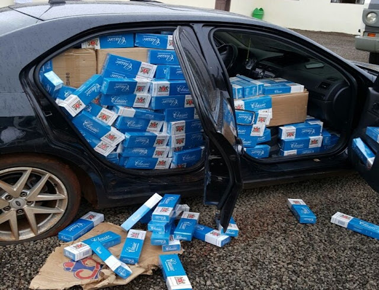

Um caso inusitado ganhou destaque na última semana após a prisão de um professor de uma faculdade pública, especializado em Bancos de Dados, acusado de contrabando de paçocas. O incidente ocorreu nas proximidades da universidade, onde o docente foi flagrado por agentes da Polícia Federal transportando uma carga não regulamentada do doce típico brasileiro. O professor, conhecido por sua atuação na área de Ciências Exatas e por ministrar aulas de Estruturas de Dados para cursos de Computação, foi abordado enquanto dirigia um veículo com uma grande quantidade de paçocas, sem qualquer documentação fiscal. Ele estava se dirigindo para um ponto de distribuição local, mas a carga não tinha sido registrada nos órgãos competentes, o que gerou suspeitas sobre a legalidade da transação.
Os Suplentes do anexo abaixo ficam convocados, para tomarem conhecimento das vagas, de acordo com a classificação e procederem à matrícula Online na Secretaria Acadêmica da Faculdade de Tecnologia de Sorocaba “José Crespo Gonzales".
Mais informações no site oficial da Fatec
Aplicação do teste TOEIC na FATEC-Sorocaba para alunos, funcionários e professores em dois horários em novembro:
Ao fazer a inscrição, preencher o código da escola com o número 3.
Para realizar o exame é necessário trazer lápis, borracha e documento com foto.
Inscrições até dia 16 de março (as primeiras 2 datas), 23 de março (para as últimas 2 datas) ou antes, se esgotarem as vagas!
Faculdade de Tecnologia de Sorocaba
Av. Engenheiro Carlos Reinaldo Mendes, 2015 - Alto da Boa Vista - Sorocaba/SP
Todos os direitos reservados.
Telefone: (15) 3238-5266
E-mail seção de alunos: f003alunos@cps.sp.gov.br
E-mail seção de estágios:f003estagios@cps.sp.gov.br
BLOG DO BERIMBAU. CONTRABANDO. Disponível em: https://www.blogdoberimbau.com/2017/01/contrabando-veiculo-abarrotado-de.html. Acesso em: 10 mar. 2025.
FACULDADE DE TECNOLOGIA DE SOROCABA. Disponível em: https://fatecsorocaba.edu.br/. Acesso em: 10 mar. 2025.